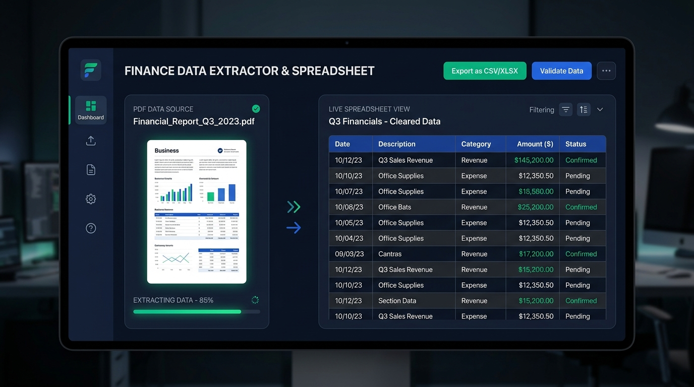

Work Experience & Internships
JSPL (Jindal Steel & Power Ltd)
Commissioned JSPL's first high-speed Twin Strand Slab Caster as Control Room Engineer. Overseen Process Control, data analytics for KPI improvement, and led a team of 20+ operators.
SAIL & EIL Internships
Assisted in 3 Diesel-Electric Locomotive Maintenance (RITES) in TRM Dept. of Rourkela Steel Plant (SAIL). Worked in Rotating Equipment Division of EIL, Delhi, drafting Process Data Sheets for Pumps.
Software & Automation Projects

FinTabula: Table Extractor
A modern web app using pdfplumber and Gemini 1.5 Flash to intelligently scan and rebuild complex, multi-page financial statement tables into beautifully styled Excel workbooks.

WhatsApp Command Center
An AI Chief of Staff application that sits on top of WhatsApp (via Baileys) translating messy B-School groups into actionable summaries, priority matrices, and interactive terminal briefings using Gemini AI.

SCM Mission Control
High-fidelity, real-time Supply Chain Mission Control Dashboard providing end-to-end route visibility, live route traffic from TomTom, and multi-API weather forecasting.
Tools 101 Suite
Custom automation tools including a Telegram–Google Drive File Synchronization Tool, Bulk WhatsApp Community Manager, and a Desktop Automation Widget.
Telegram to Google Drive Sync
An asynchronous Python script built with Telethon that safely extracts PDF documents from targeted Telegram channels and streams them directly into Google Drive via API.